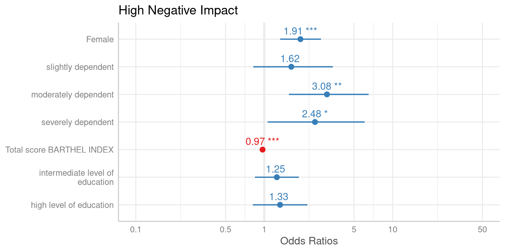

[1] 2Segundo documento
Quarto
Quarto enables you to weave together content and executable code into a finished document. To learn more about Quarto see https://quarto.org.
Rodando Código
When you click the Render button a document will be generated that includes both content and the output of embedded code. You can embed code like this:
You can add options to executable code like this
[1] 4The echo: false option disables the printing of code (only output is displayed).
R – código e figura
Figura 1 further explores the impact of temperature on ozone level.
Figura no markdown
Cross reference with Figura 2, more details in https://quarto.org/docs/authoring/figures.html.
Tabelas Markdown
| Default | Left | Right | Center |
|---|---|---|---|
| 12 | 12 | 12 | 12 |
| 123 | 123 | 123 | 123 |
| 1 | 1 | 1 | 1 |
Cross reference as Tabela 1.
Tabelas – knitr
Cross-reference with Tabela 2.
Código
Tabela 2: Example
| speed | dist |
|---|---|
| 4 | 2 |
| 4 | 10 |
| 7 | 4 |
| 7 | 22 |
| 8 | 16 |
| 9 | 10 |
| temperature | pressure |
|---|---|
| 0 | 0.0002 |
| 20 | 0.0012 |
| 40 | 0.0060 |
| 60 | 0.0300 |
| 80 | 0.0900 |
| 100 | 0.2700 |
Tabelas – DT
Tabelas – DT download
Código
mtcars |>
tibble::rownames_to_column(var = 'car') |>
dplyr::select(1:5) |>
DT::datatable(extensions = 'Buttons', rownames = F,
options = list(
dom = 'Bfrtip',
pageLength = 5,
buttons = list(list(
extend = 'collection',
buttons = list(list(extend = 'csv', filename = 'data'),
list(extend = 'excel', filename = 'data')),
text = 'Download')))) Tabelas – gt
Opção a ser analisada gt.
Código
library(gt)
library(tidyverse)
library(glue)
# Define the start and end dates for the data range
start_date <- "2010-06-07"
end_date <- "2010-06-14"
# Create a gt table based on preprocessed
# `sp500` table data
sp500 %>%
filter(date >= start_date & date <= end_date) %>%
select(-adj_close) %>%
gt() %>%
tab_header(
title = "S&P 500",
subtitle = glue("{start_date} to {end_date}")
) %>%
fmt_date(
columns = date,
date_style = 3
) %>%
fmt_currency(
columns = c(open, high, low, close),
currency = "USD"
) %>%
fmt_number(
columns = volume,
suffixing = TRUE
)| S&P 500 | |||||
| 2010-06-07 to 2010-06-14 | |||||
| date | open | high | low | close | volume |
|---|---|---|---|---|---|
| Mon, Jun 14, 2010 | $1,095.00 | $1,105.91 | $1,089.03 | $1,089.63 | 4.43B |
| Fri, Jun 11, 2010 | $1,082.65 | $1,092.25 | $1,077.12 | $1,091.60 | 4.06B |
| Thu, Jun 10, 2010 | $1,058.77 | $1,087.85 | $1,058.77 | $1,086.84 | 5.14B |
| Wed, Jun 9, 2010 | $1,062.75 | $1,077.74 | $1,052.25 | $1,055.69 | 5.98B |
| Tue, Jun 8, 2010 | $1,050.81 | $1,063.15 | $1,042.17 | $1,062.00 | 6.19B |
| Mon, Jun 7, 2010 | $1,065.84 | $1,071.36 | $1,049.86 | $1,050.47 | 5.47B |
Tabelas – gtsummary
Opção a ser analisada gtsummary.
Código
| Characteristic | N = 2001 |
|---|---|
| Age | 47 (38, 57) |
| Unknown | 11 |
| Grade | |
| I | 68 (34%) |
| II | 68 (34%) |
| III | 64 (32%) |
| Tumor Response | 61 (32%) |
| Unknown | 7 |
| Chemotherapy Treatment | |
| Drug A | 98 (49%) |
| Drug B | 102 (51%) |
| 1 Median (IQR); n (%) | |
Código
tbl_summary(
trial2,
by = trt, # split table by group
missing = "no" # don't list missing data separately
) %>%
add_n() %>% # add column with total number of non-missing observations
add_p() %>% # test for a difference between groups
modify_header(label = "**Variable**") %>% # update the column header
bold_labels() | Variable | N | Drug A, N = 981 | Drug B, N = 1021 | p-value2 |
|---|---|---|---|---|
| Age | 189 | 46 (37, 59) | 48 (39, 56) | 0.7 |
| Grade | 200 | 0.9 | ||
| I | 35 (36%) | 33 (32%) | ||
| II | 32 (33%) | 36 (35%) | ||
| III | 31 (32%) | 33 (32%) | ||
| Tumor Response | 193 | 28 (29%) | 33 (34%) | 0.5 |
| 1 Median (IQR); n (%) | ||||
| 2 Wilcoxon rank sum test; Pearson's Chi-squared test | ||||
Regressão – gtsummary
Código
| Characteristic | OR1 | 95% CI1 | p-value |
|---|---|---|---|
| Chemotherapy Treatment | |||
| Drug A | — | — | |
| Drug B | 1.13 | 0.60, 2.13 | 0.7 |
| Age | 1.02 | 1.00, 1.04 | 0.10 |
| Grade | |||
| I | — | — | |
| II | 0.85 | 0.39, 1.85 | 0.7 |
| III | 1.01 | 0.47, 2.15 | >0.9 |
| 1 OR = Odds Ratio, CI = Confidence Interval | |||
Regressão lado a lado – gtsummary
Código
| Characteristic | Tumor Response | Time to Death | ||||
|---|---|---|---|---|---|---|
| OR1 | 95% CI1 | p-value | HR1 | 95% CI1 | p-value | |
| Chemotherapy Treatment | ||||||
| Drug A | — | — | — | — | ||
| Drug B | 1.13 | 0.60, 2.13 | 0.7 | 1.30 | 0.88, 1.92 | 0.2 |
| Age | 1.02 | 1.00, 1.04 | 0.10 | 1.01 | 0.99, 1.02 | 0.3 |
| Grade | ||||||
| I | — | — | — | — | ||
| II | 0.85 | 0.39, 1.85 | 0.7 | 1.21 | 0.73, 1.99 | 0.5 |
| III | 1.01 | 0.47, 2.15 | >0.9 | 1.79 | 1.12, 2.86 | 0.014 |
| 1 OR = Odds Ratio, CI = Confidence Interval, HR = Hazard Ratio | ||||||
Regressão – sjPlot
Código
library(sjPlot)
library(sjlabelled)
library(sjmisc)
library(ggplot2)
data(efc)
theme_set(theme_sjplot())
y <- ifelse(efc$neg_c_7 < median(na.omit(efc$neg_c_7)), 0, 1)
# create data frame for fitting model
df <- data.frame(
y = to_factor(y),
sex = to_factor(efc$c161sex),
dep = to_factor(efc$e42dep),
barthel = efc$barthtot,
education = to_factor(efc$c172code)
)
# set variable label for response
set_label(df$y) <- "High Negative Impact"
# fit model
m1 <- glm(y ~., data = df, family = binomial(link = "logit"))
tab_model(m1)| High Negative Impact | |||
|---|---|---|---|
| Predictors | Odds Ratios | CI | p |
| (Intercept) | 2.01 | 0.64 – 6.22 | 0.225 |
| carer's gender: Female | 1.91 | 1.33 – 2.76 | <0.001 |
| elder's dependency: slightly dependent |
1.62 | 0.82 – 3.42 | 0.179 |
| elder's dependency: moderately dependent |
3.08 | 1.56 – 6.50 | 0.002 |
| elder's dependency: severely dependent |
2.48 | 1.06 – 6.05 | 0.039 |
| Total score BARTHEL INDEX | 0.97 | 0.96 – 0.98 | <0.001 |
| carer's level of education: intermediate level of education |
1.25 | 0.85 – 1.86 | 0.258 |
| carer's level of education: high level of education |
1.33 | 0.82 – 2.17 | 0.255 |
| Observations | 815 | ||
| R2 Tjur | 0.209 | ||
Regressão – sjPlot gráficos

Diagramas
flowchart LR
A[Hard edge] --> B(Round edge)
B --> C{Decision}
C --> D[Result one]
C --> E[Result two]
Citações
Citação direta: Lee, Iliev e Preston (2009), Pénin e Neicu (2018), Arnold (2015).
Citação indireta (Arnold, 2015; Lee, Iliev e Preston, 2009; Pénin e Neicu, 2018).
Texto entre parênteses (see Lee, Iliev e Preston, 2009, pp. 33–35; also Arnold, 2015, chap. 1).
Nome do autor e ano (2015).
Notas de rodapé
Here is a footnote reference,1 and another.2
Here is an inline note.3
Equações
Black-Scholes (Equação 1) is a mathematical model that seeks to explain the behavior of financial derivatives, most commonly options:
\[ \frac{\partial \mathrm C}{ \partial \mathrm t } + \frac{1}{2}\sigma^{2} \mathrm S^{2} \frac{\partial^{2} \mathrm C}{\partial \mathrm C^2} + \mathrm r \mathrm S \frac{\partial \mathrm C}{\partial \mathrm S}\ = \mathrm r \mathrm C \tag{1}\]
Código de Python
Obs.: necessário ter Python instalado, assim como, os pacotes numpy e matplotlib. Se tiver Python e Julia instalados, altere ‘|# eval:’ e ‘|# include:’ para ‘true’.
For a demonstration of a line plot on a polar axis.
Código de Julia
Obs.: necessário ter Julia instalada, assim como, o pacote Plots.
Plot function pair (x(u), y(u)).
Código de C++
Referências
ARNOLD, A. J. A game-theoretic approach to modelling crop royalties. [s.l.] University of Adelaide, 2015.
LEE, B.; ILIEV, I.; PRESTON, F. Who owns our low carbon future? [s.l.] Royal Institute of International Affairs (RIIA), 2009.
PÉNIN, J.; NEICU, D. Patents and Open Innovation: Bad Fences Do Not Make Good Neighbors. Journal of Innovation Economics, v. 25, n. 1, p. 57, 2018.